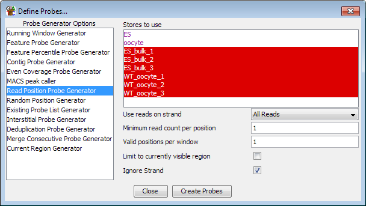

The read position is a somewhat specialised probe generator which is designed to be used for datasets where you have reads occurring at a defined number of positions. It places a probe at every distinct read position in the dataset. Applications which could use this generator would be tag counting applications (such as 4C experiments), the analysis of introns to find changes in splicing usage, or when grouping positions, for the analysis of larger positional datasets use as bisulphite sequencing.
This probe generator is NOT suitable for any type of diverse dataset where reads could conceivably occur at any point in the genome. Trying to use this generator on a diverse dataset will result in the generation of millions of probes which is likely to cause your machine to grind to a halt.
